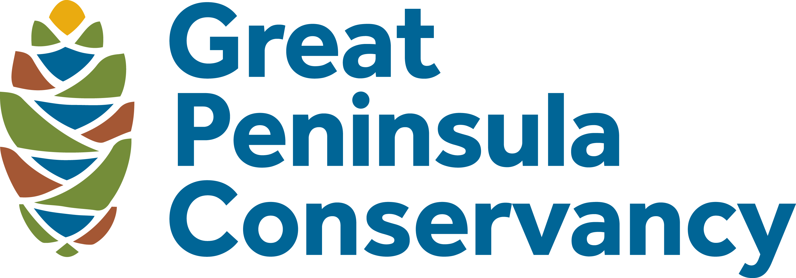

Explore over 7 miles of riparian forest, wetlands, and salmon-bearing creek winding through the heart of Kitsap County. Tap a stop to learn the history, ecology, and stories along the way.
Managed by Great Peninsula Conservancy in partnership with Kitsap County